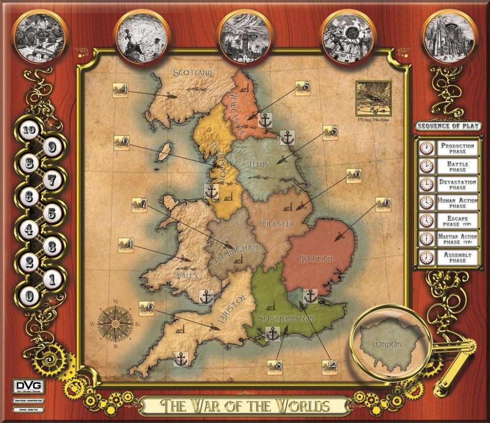
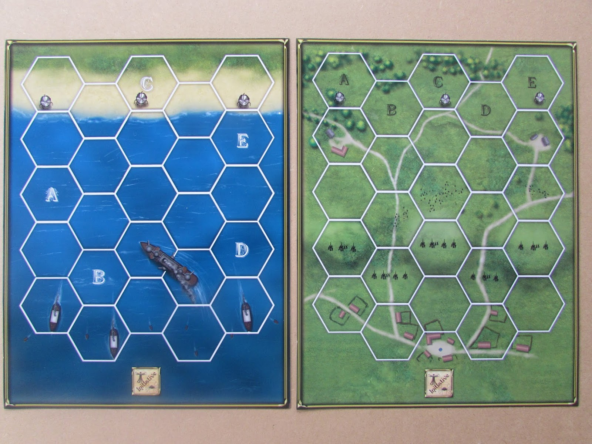

Design: Arnauld Della Siega & Kevin Verssen | Art: Nicolas Treil | DVG Games
Phasen-Clock
Production Phase
Produktionspunkte (PP)
0
Victory Points
H: 0M: 0
Germ Counter
0 / 10
Colonization
0 / 10
Flugmaschine (FM)
0 / 4

Taktische Schlacht
Runde: 1
Initiative: -
Schlachtpläne kaufen:

Aktive Schlachtpläne
Gezogene Mars-Aktionskarte
Warte auf Zug...
Custom Die
?
Klicke zum Würfeln bei Aufforderung
Gefechtslog
Sieg der Menschheit!
Alle marsianischen Kräfte wurden vernichtet oder durch Erreger dahingerafft.
Spielrunden überlebt: 0
Zerstörte Tripods: 0
Gerettete Flüchtlinge: 0
Würfelbecher schütteln...
?
Warte auf Wurf...
EVENT-KARTE
Karte Name
Beschreibung...
Spielanleitung & Hilfe
Ziele des Spiels
Menschlicher Sieg: Vernichte alle Tripods/Wellen und Zylinder auf der Karte ODER bringe deinen Germ-Track auf 10 (bzw. erfolgreicher Germ-Roll ab Stufe 7).
Marsianischer Sieg: Die Marsianer gewinnen sofort, falls London zerstört wird (Workforce = 0) ODER der Colonization-Track 10 erreicht (bzw. ab 7 erfolgreicher Wurf) ODER die Marsianer alle 4 Teile der Flugmaschine zusammengebaut haben.
Ablauf einer Runde
PP sammeln & Einheiten kaufen: Erhalte PP für nicht zerstörte Zonen. Platziere Einheiten in Fabriken.
Tripod-Devastation: Wellen in Zonen verursachen Bevölkerungsschäden (senken Gears) und erzeugen Flüchtlinge.
Kämpfe: Schlachten finden in Zonen statt, in denen Marsianer und deine Artillerie gleichzeitig stehen.
Menschliche Aktionen: Jede deiner Einheiten kann sich 1 Zone bewegen. Infanterie in Zonen mit Zylindern kann diese angreifen, um Tripods im Bau zu zerstören.
Flucht & Zylinder: Flüchtlinge an Häfen rollen für die Evakuation. Neue Zylinder stürzen auf die Erde.
Marsianische Aktionen: AI-Tripods bewegen sich, reparieren sich oder bauen die Flugmaschine.
Assembly: Zylinder können sich in aktive Welle (4 Tripods) verwandeln, wenn der Würfelwurf die Handling-Machine-Farbe trifft.
Event ziehen: Eine Zufallskarte wird gezogen und beeinflusst das Spiel.